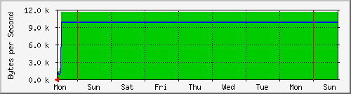

Balanceador Internet1 AXTEL
| System: | Balanceador Internet1 |
| Maintainer: | dangelesc@finanzas.cdmx.gob.mx; |
| Description: | GigabitEthernet6/22 Balanceador |
| ifType: | ethernetCsmacd (6) |
| ifName: | Gi6/22 |
| Max Speed: | 125.0 MBytes/s |
| Ip: | 10.1.33.9 (No DNS name) |
Estadísticas actualizadas el Lunes 31 de Mai de 2021 a las 15:15,
'SW-12.126-DRL.Rack01.finanzas.df.gob.mx' ha estado funcionando durante 76 days, 23:31:04.
Gráfico diario (5 minutos : Promedio)
|
Máx |
Promedio |
Actual |
| Entrante: |
11.6 kB/s (0.0%) |
10.5 kB/s (0.0%) |
2653.0 B/s (0.0%) |
| Saliente: |
9739.0 B/s (0.0%) |
8773.0 B/s (0.0%) |
2011.0 B/s (0.0%) |
Gráfico semanal (30 minutos : Promedio)

|
Máx |
Promedio |
Actual |
| Entrante: |
11.6 kB/s (0.0%) |
11.4 kB/s (0.0%) |
2503.0 B/s (0.0%) |
| Saliente: |
9739.0 B/s (0.0%) |
9608.0 B/s (0.0%) |
1527.0 B/s (0.0%) |
Gráfico mensual (2 horas : Promedio)
|
Máx |
Promedio |
Actual |
| Entrante: |
11.6 kB/s (0.0%) |
11.6 kB/s (0.0%) |
4384.0 B/s (0.0%) |
| Saliente: |
9739.0 B/s (0.0%) |
9723.0 B/s (0.0%) |
3158.0 B/s (0.0%) |
Gráfico anual (1 día : Promedio)
|
Máx |
Promedio |
Actual |
| Entrante: |
11.6 kB/s (0.0%) |
11.6 kB/s (0.0%) |
11.6 kB/s (0.0%) |
| Saliente: |
9739.0 B/s (0.0%) |
9730.0 B/s (0.0%) |
9739.0 B/s (0.0%) |
| VERDE ### |
Tráfico entrante en Bytes por segundo |
| AZUL ### |
Tráfico saliente en Bytes por segundo |